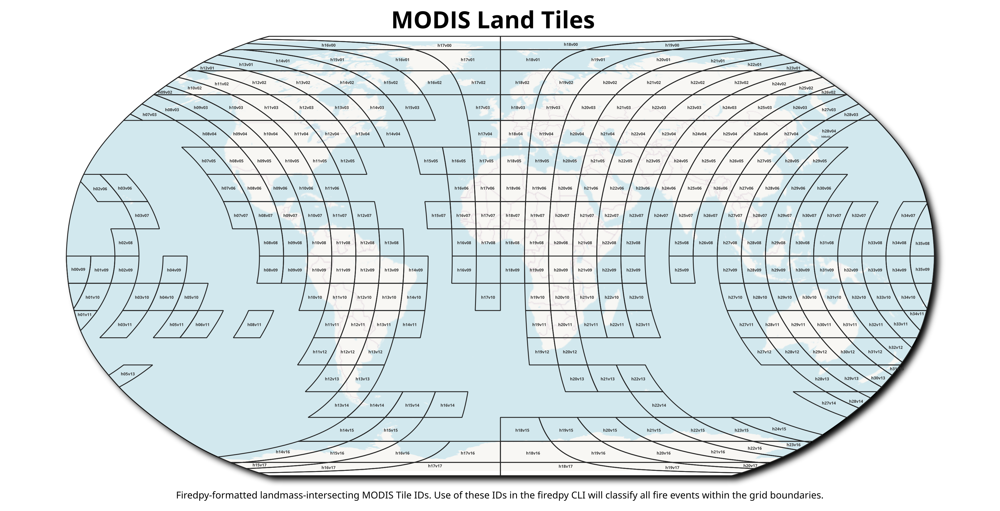

You can specify the spatial and temporal parameters of the window, or the spatial and temporal extent. Specify -sp, -tp (see parameters for more information), use a shapefile, or specify a list of MODIS Sinusoidal Projection tile IDs. Countries, continents and US states are included. Any area from the world may be selected.
In the current version, memory constraints may limit the extent available for a single model run.
Equatorial regions have much more fire activity, and may require much more RAM to process than
a normal laptop will have.
The algorithm outputs shapefiles of delineated fire events in either .shp or .gpkg format. In
addition to the full event polygons created by default, the user has the option of producing
daily-level perimeters, providing a representation of both final and expanding event perimeters.
Boundary files are available for use as areas of interest
For example, using the -sf option to select fire data for Colorado, USA.:
firedpy -sf ~/firedpy/firedpy/data/us_states/colorado.gpkg
- Country boundaries are in data/individual_countries
- Continent boundaries are in data/continents
- United States state boundaries for the United States of America are in dat/us_states
- Australian state boundaries are in data/australian_states
- If using the ineractive option, when prompted for the name of the country, spaces will be replaced with spaces and case does not matter.
The MODIS Sinusioidal Project
You may specify study areas for FIREDpy using individual MODIS tiles. This product uses a Sinusoidal, Lambert Azimuthal Equal-Area projection. There are several spatial resolutions available for this data, but FIREDpy uses the 500m resolution (actual distances depend on location). For more information about this projection, click here. If you would like to use the MODIS sinusoidal grid IDs to identify FIREDpy study areas, see the visualization of this grid below.
